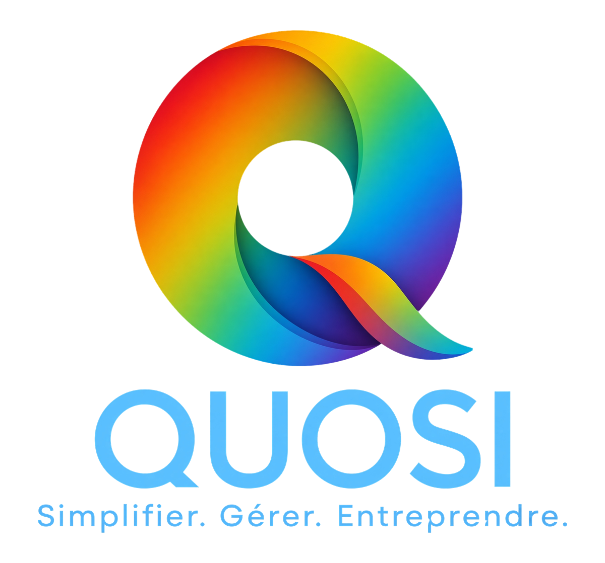

Simplifier. Gérer. Entreprendre.

QUOSI est une application de gestion destinée aux entrepreneur·es individuel·les.
Je l'ai créée pour répondre au besoin d'un indépendant qui cherchait à centraliser sa gestion administrative sans s'éparpiller entre plusieurs applications. Ce projet d'application et d'entreprise m'a permis de monter en compétences techniques tout en me confrontant aux réalités du terrain, notamment sur les aspects légaux et la gestion d'un projet de A à Z.
La création d'QUOSI a nécessité une vision globale du projet. Je sais maintenant délimiter un projet, voir ses limites, trouver des solutions et avoir une vision à long terme.
Créer une application de bureautique impose de suivre un calendrier précis : dates de déploiement, de communication, de retours utilisateurs, mais aussi échéances juridiques.
Les retours utilisateurs, les nouvelles lois ou la découverte d'un bug peuvent me pousser à revoir mes priorités. J'ai appris à juger et à réorganiser mes tâches de façon efficace, autonome et rapide, même sous pression.
ÉTIQUETTES